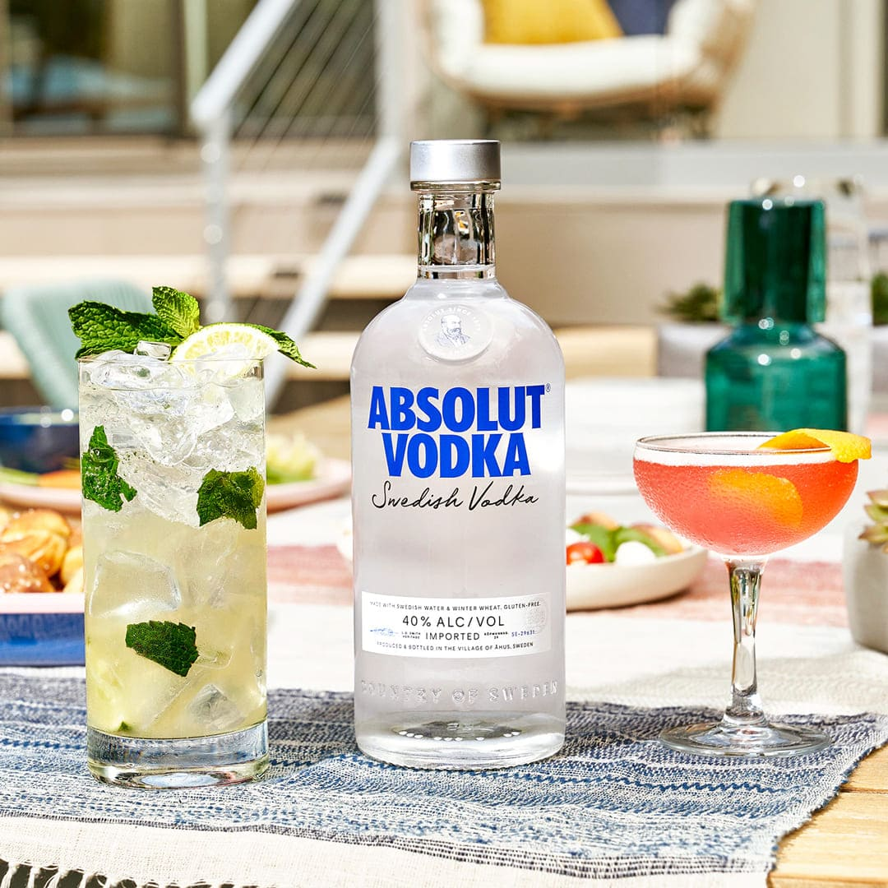

Alcoholen
Koolstofverbindingen waarin een hydroxylgroep (-OH) voorkomt, zijn alcoholen. Een alkanol kun je opvatten als een alkaan waarin één H-atoom is vervangen door een hydroxylgroep. Dit is een belangrijke karakteristieke groep. Om dit belang aan te geven, krijgen alcoholen -ol achter de stamnaam. Er zijn meer karakteristieke groepen die de stamnaam een achtervoegsel geven, als deze belangrijker zijn dan de OH-groep, krijgt het alcohol hydroxy- als voorvoegsel. Hierover is meer te vinden bij --. Vanaf drie koolstofatomen moet de groep -OH een plaatsnummer krijgen, dat zo laag mogelijk is. Drie bekende voorbeelden zijn methanol (CH3OH), ethanol (C2H5OH) en glycerol (C3H8O3). In vodka zit bijvoorbeeld 40% ethanol.
